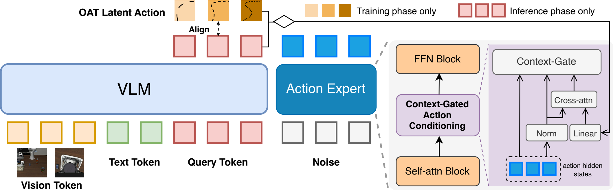
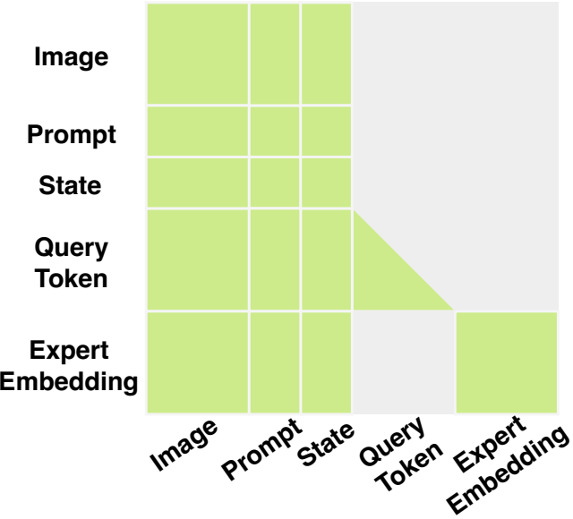
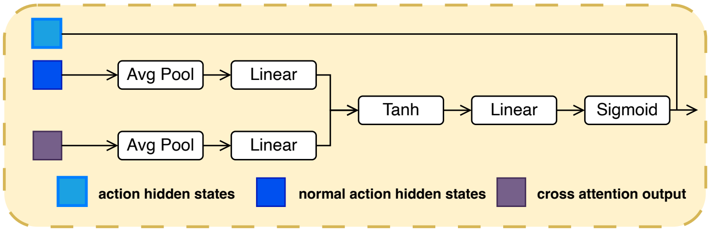
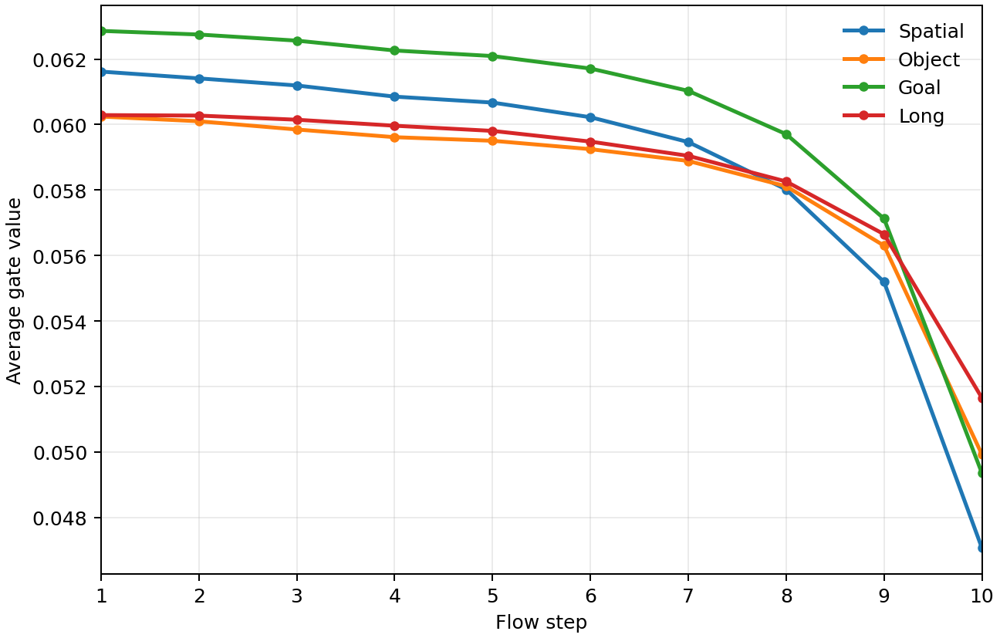
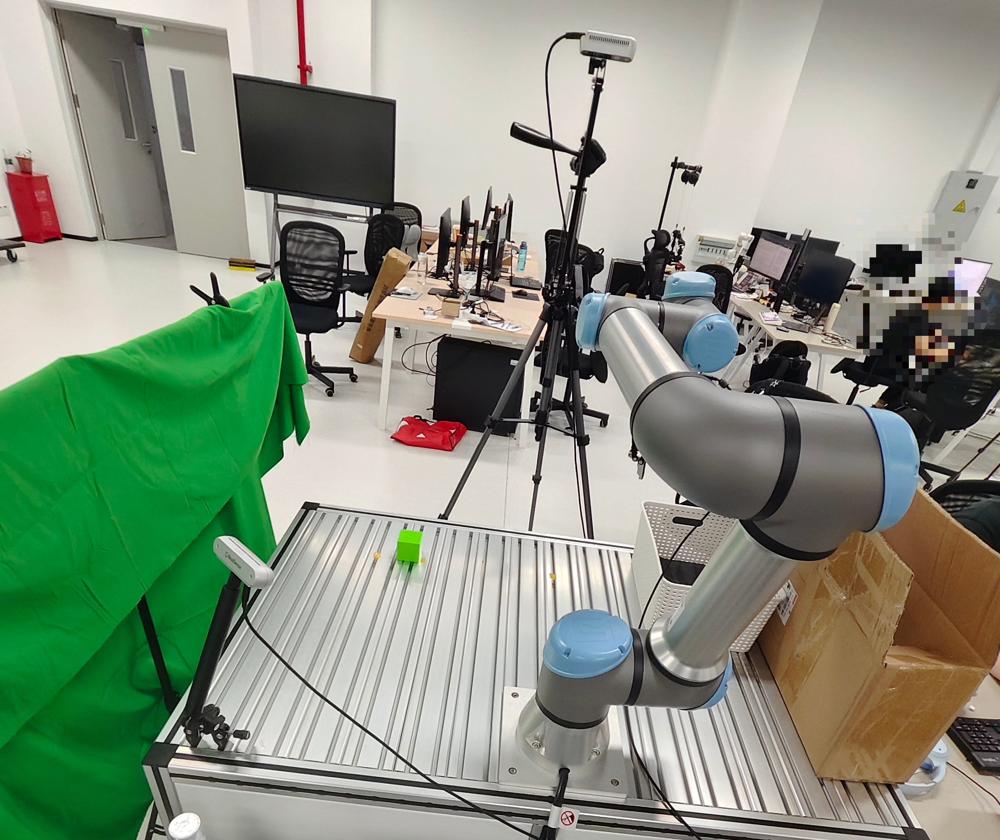

Predict
Dedicated VLM query tokens predict OAT-aligned latent actions from the current image and language instruction.
Vision-Language-Action Models
A VLM-native latent-action interface that gives continuous action experts structured guidance while learning when and how strongly to use it.
Submitted to CoRL 2026
LIBERO average success
LIBERO-Plus SFT
Real-world Full SR
01 / Motivation
Standard VLA systems ask the action expert to recover precise motor structure from representations optimized primarily for visual-language understanding. CAC-VLA makes that interface explicitly action-structured and adaptive.
02 / Method
CAC-VLA predicts compact, coarse-to-fine representations of future action segments inside the VLM. The original action expert remains responsible for producing executable continuous action chunks.



Dedicated VLM query tokens predict OAT-aligned latent actions from the current image and language instruction.
Expert hidden states use cross-attention to retrieve action information relevant to the current layer and generation state.
A channel-wise context gate controls the residual contribution of the retrieved latent-action update.
Cross-attention decides what is relevant. The gate decides how much enters the expert.
03 / Adaptive Conditioning
Predicted latent actions can be incomplete, noisy, or mismatched with the immediate control requirement. Their usefulness also changes across task phases and flow steps, so fixed-strength fusion is unnecessarily rigid.

04 / Simulation
CAC-VLA is evaluated on LIBERO and LIBERO-Plus, including distribution shifts in viewpoint, embodiment, language, lighting, background, noise, and layout.
LIBERO
98.3% Average success rate, ranked #2LIBERO-Plus
89.5% Supervised fine-tuningDesign ablation
98.3% Full CAC-VLACAC-VLA ranks second overall and achieves the best Object and Goal suite scores.
The strongest average result under supervised fine-tuning across seven shifts.
Trained on LIBERO and evaluated directly on LIBERO-Plus without shift-specific fine-tuning.
| Method | Spatial | Object | Goal | Long | Avg. |
|---|---|---|---|---|---|
| π0.5 | 98.8 | 98.2 | 98.0 | 92.4 | 96.9 |
| ACoT-VLA | 98.6 | 99.0 | 99.4 | 97.0 | 98.5 |
| CAC-VLA | 98.4 | 99.8 | 99.6 | 95.4 | 98.3 |
Moderate future context and adaptive injection provide the best average result.
| Setting | Spatial | Object | Goal | Long | Avg. |
|---|---|---|---|---|---|
| Hl = 10 | 98.8 | 99.8 | 99.6 | 94.2 | 98.1 |
| Hl = 20 | 98.4 | 99.8 | 99.6 | 95.4 | 98.3 |
| Hl = 30 | 98.0 | 99.8 | 97.2 | 97.2 | 98.1 |
| Variant | Spatial | Object | Goal | Long | Avg. |
|---|---|---|---|---|---|
| Without latent action | 97.6 | 99.8 | 99.0 | 95.6 | 98.0 |
| Without context gate | 98.8 | 99.8 | 98.8 | 94.0 | 97.9 |
| Full CAC-VLA | 98.4 | 99.8 | 99.6 | 95.4 | 98.3 |
05 / Real World
CAC-VLA and the π0.5 baseline are fine-tuned on the same 50 demonstrations and evaluated over 25 independent trials using a UR7e and two RealSense D435i cameras.

Scope. The real-world study is intentionally initial: one task, one robot embodiment, and a limited demonstration set. Broader tasks and task-adaptive latent horizons remain future work.
06 / Takeaway
CAC-VLA makes the VLM-to-expert interface action-structured and adaptive.
VLM-native latent-action prediction without a standalone executable action generator.
Expert-preserving design that leaves continuous robot control to the original action expert.
Context-gated residual modulation that calibrates guidance instead of trusting it uniformly.
07 / Citation
Update the author list and publication fields after the paper becomes public.
@inproceedings{anonymous2026cacvla,
title = {CAC-VLA: Context-Gated Action Conditioning for
Vision-Language-Action Models},
author = {Anonymous Author(s)},
booktitle = {Conference on Robot Learning},
year = {2026}
}